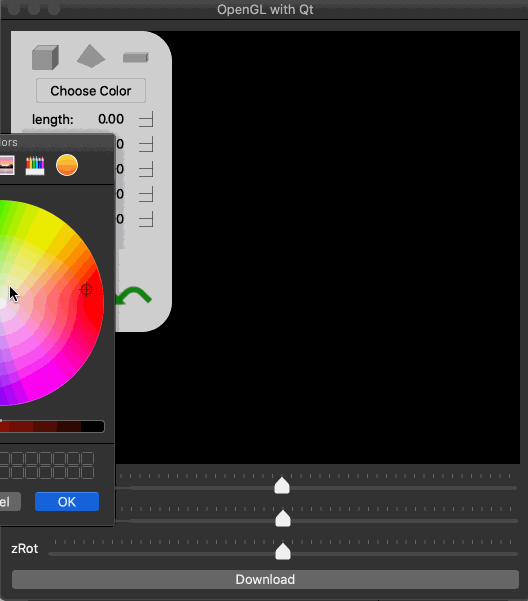

Work
-

Onesta

Onesta is a Flask application that was birthed at HackNYU 2019 by five individuals. Onesta scans a product's barcode and returns the name, brand and ingredients of the product. I used JavaScript library QuaggaJS and a mode function to read the product's barcode from a webcam/phone camera. Given the product's barcode, I called the Nutritionix API and extracted the wanted data, ultimately displaying the results in HTML.
Challenges:
- Originally, the purpose of this project was to provide more information on those hard-to-pronounce ingredients in an attempt to teach users' about the food they put into their body. Unfortunately, it was difficult to find a public database with information on these ingredients, so we decided to drop the explanation part. However, it was also difficult finding a FREE API that gives nutrition information for a product given a barcode at the time of this project's creation. Nutritionix is not entirely free (has limitations). I've learned of other options such as Open Food Facts that exist.
- I used a JavaScript library to read the barcodes and Flask to make an API call. This meant using JQuery's post method to call the '/barcode' route function in Flask and use jQuery replaceWith() method to replace some HTML with the response from Flask (since render_template refreshed the page, therefore losing the data from API call). In the future, I believe it would be better to use a JavaScript-based web framework such as Node.js
-

-

A Filtered Generation

A Filtered Generation (AFG) was a project created during my internship at CATCH NYC in 2016. I had previosly held an internship where I did some coding work, but CATCH NYC was the first place where I worked with non-coders to creating a website (a small coding project). I collaborated with three design interns to create a responsive landing page, showcasing research done on millenials.
Challenges:
- I had never collaborated on a project where I had to explain technical terms to non-coders. I struggled to find the language needed to communicate with these three design interns. For example, I was given a .psd file highlighting the layout for the landing page, including text images. I wasn't sure what I was supposed to do with the file, so I asked another web developer colleague to help guide me through the process. Turns out, I needed more than the .psd file to complete the project (i.e. raw text and fonts, imgs, etc.). Overall, I learned what was possible in web development but also what deliverables to expect from a client.
- I was responsible for creating the project from scratch and deciding how the project was going to be built. I did not have much experience in web development at the time so doing this was a struggle. I did not know a lot about hosting, using JavaScript libraries, etc. Aside from asking my web developer colleagues, I used my documentation-reading skills to figure out how to implement the neccessary functions needed for the project (also, thousands of ways on how not to do things). Fortunately, I was able to complete and present my part of the project in a timely manner.
Built with: HTML, CSS, JavaScript (Greensock, ScrollMagic), GitHub PagesSkills: Cross-functional communication, collaboration, problem solving, being resourceful
-

-